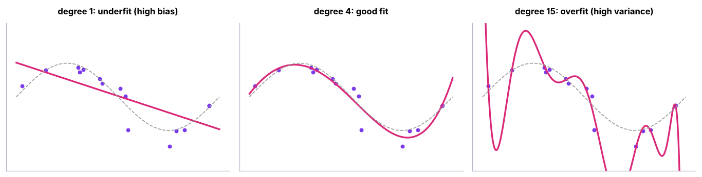
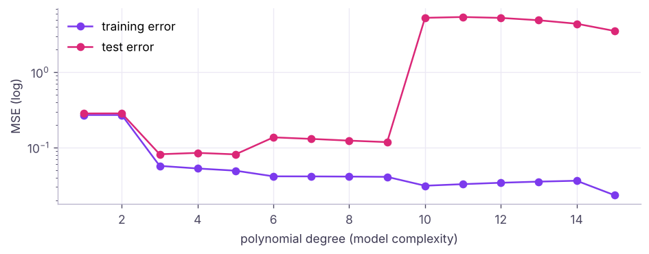
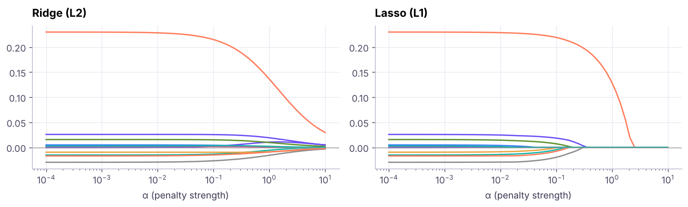
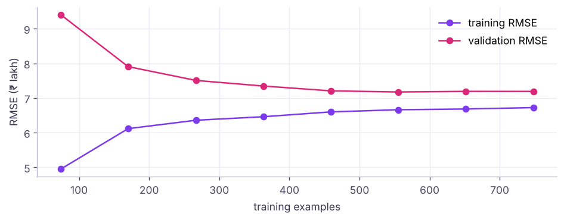

Overfitting, Polynomial Regression and Regularisation (Ridge, Lasso, Elastic Net)
See overfitting and underfitting happen, learn the bias-variance trade-off with polynomial regression, and control model complexity with L2 (Ridge), L1 (Lasso) and Elastic Net penalties, including choosing the penalty strength with cross-validation, feature selection with Lasso, and learning curves.
- Recognise underfitting and overfitting from train vs test errors and plots
- Explain the bias-variance trade-off and how model complexity affects it
- Fit polynomial regression and control its degree
- Apply Ridge, Lasso and Elastic Net and tune alpha with RidgeCV/LassoCV
- Use learning and validation curves to decide between more data and a different model
Underfitting and overfitting

| Underfitting | Good fit | Overfitting | |
|---|---|---|---|
| Training error | High | Low | Very low |
| Test error | High | Low | High |
| Cause | Model too simple, missing features | Model too complex, too little data, leakage | |
| Fix | More features, more flexible model, less regularisation | More data, simpler model, regularisation, feature selection, early stopping |
The bias-variance trade-off
Bias is the error from wrong assumptions (a line for a curve). Variance is the error from sensitivity to the particular training sample. Total expected error = bias² + variance + irreducible noise.
from sklearn.metrics import mean_squared_error
x_test = rng.uniform(0, 1, 500); y_test = np.sin(2 * np.pi * x_test) + rng.normal(0, .25, 500)
for d in (1, 2, 3, 4, 6, 9, 12, 15):
m = make_pipeline(PolynomialFeatures(d), StandardScaler(), LinearRegression()).fit(x[:, None], y)
tr = mean_squared_error(y, m.predict(x[:, None])); te = mean_squared_error(y_test, m.predict(x_test[:, None]))
print(f"degree {d:2d}: train MSE {tr:7.3f} | test MSE {te:10.3f}")degree 1: train MSE 0.271 | test MSE 0.284 degree 2: train MSE 0.271 | test MSE 0.285 degree 3: train MSE 0.057 | test MSE 0.082 degree 4: train MSE 0.053 | test MSE 0.085 degree 6: train MSE 0.042 | test MSE 0.137 degree 9: train MSE 0.041 | test MSE 0.118 degree 12: train MSE 0.034 | test MSE 5.285 degree 15: train MSE 0.023 | test MSE 3.548

Regularisation
Instead of choosing fewer features by hand, add a penalty on large coefficients to the cost:
Elastic Net mixes both (l1_ratio). Larger α means stronger shrinkage, simpler models, more bias and less variance. Always scale features first, so the penalty treats them fairly.
for name, model in [("no penalty", LinearRegression()), ("Ridge α=0.01", Ridge(alpha=0.01)), ("Lasso α=0.001", Lasso(alpha=0.001, max_iter=100000))]:
m = make_pipeline(PolynomialFeatures(15), StandardScaler(), model).fit(x[:, None], y)
coefs = m[-1].coef_
print(f"degree-15 {name:12s} test MSE {mean_squared_error(y_test, m.predict(x_test[:, None])):9.3f} | largest |coef| {np.abs(coefs).max():12.1f} | zero coefs {(np.abs(coefs) < 1e-8).sum():2d} of {len(coefs)}")degree-15 no penalty test MSE 3.548 | largest |coef| 9560.9 | zero coefs 0 of 16 degree-15 Ridge α=0.01 test MSE 0.113 | largest |coef| 2.2 | zero coefs 1 of 16 degree-15 Lasso α=0.001 test MSE 0.089 | largest |coef| 4.1 | zero coefs 12 of 16
The same degree-15 model becomes well behaved once its coefficients are penalised. Lasso sets some coefficients exactly to zero (automatic feature selection); Ridge shrinks all of them smoothly and handles correlated features well.

Choosing α with cross-validation
from sklearn.model_selection import train_test_split, cross_val_score
h = pd.read_csv("house_prices.csv").dropna(subset=["area_sqft"])
pps = h.price_lakh * 1e5 / h.area_sqft; h = h[pps.between(pps.median() / 3, pps.median() * 3)]
X = pd.get_dummies(h.drop(columns=["house_id", "price_lakh"]), columns=["city"], drop_first=True).astype(float); yv = h.price_lakh
Xtr, Xte, ytr, yte = train_test_split(X, yv, test_size=0.2, random_state=0)
poly = lambda est: make_pipeline(PolynomialFeatures(2, include_bias=False), StandardScaler(), est)
models = {"linear (degree 2)": poly(LinearRegression()), "RidgeCV": poly(RidgeCV(alphas=np.logspace(-3, 3, 30))),
"LassoCV": poly(LassoCV(cv=5, random_state=0, max_iter=50000)), "ElasticNet": poly(ElasticNet(alpha=0.05, l1_ratio=0.5, max_iter=50000))}
for name, m in models.items():
m.fit(Xtr, ytr); cv = cross_val_score(m, Xtr, ytr, cv=5, scoring="neg_root_mean_squared_error").mean()
extra = f" | α = {m[-1].alpha_:.4g}" if hasattr(m[-1], "alpha_") else ""
nz = f" | non-zero coefs {(m[-1].coef_ != 0).sum()} of {len(m[-1].coef_)}"
print(f"{name:18s} CV RMSE {-cv:6.2f} | test RMSE {mean_squared_error(yte, m.predict(Xte)) ** .5:6.2f}{extra}{nz}")linear (degree 2) CV RMSE 7.21 | test RMSE 7.72 | non-zero coefs 51 of 54 RidgeCV CV RMSE 7.20 | test RMSE 7.75 | α = 0.788 | non-zero coefs 53 of 54 LassoCV CV RMSE 7.08 | test RMSE 7.64 | α = 0.07792 | non-zero coefs 25 of 54 ElasticNet CV RMSE 7.41 | test RMSE 8.05 | non-zero coefs 45 of 54
With about 900 training rows and 54 polynomial features, all models perform similarly here; Lasso reaches the same accuracy with far fewer terms. Regularisation matters most when features are many relative to rows, or strongly correlated.
Learning curves: more data or a better model?

| Learning-curve pattern | Diagnosis | Action |
|---|---|---|
| Both errors high and close | High bias (underfitting) | More features, more complex model |
| Big gap: low train, high validation | High variance (overfitting) | More data, regularisation, simpler model |
| Gap closing as data grows | Variance falling | Collect more data |
Regularisation beyond linear models
| Model | Regularisation knobs |
|---|---|
| Logistic regression | C = 1/α (smaller C = stronger penalty), penalty="l1"/"l2"/"elasticnet" |
| Decision trees | max_depth, min_samples_leaf, pruning (ccp_alpha) |
| Random forests / boosting | Tree depth, number of trees, learning rate, subsampling |
| Neural networks | Weight decay (L2), dropout, early stopping, data augmentation |
| KNN | Larger k = smoother |
Summary
- Underfitting: high error everywhere (bias). Overfitting: low training error, high test error (variance).
- Polynomial features add flexibility; the degree controls the bias-variance trade-off.
- Ridge (L2) shrinks coefficients; Lasso (L1) zeroes some (feature selection); Elastic Net combines them. Scale features first.
- Pick α by cross-validation (RidgeCV, LassoCV, GridSearchCV).
- Learning curves tell you whether more data or a different model will help.
1. Training error 2%, test error 25%. Diagnosis?
2. Which penalty can set coefficients exactly to zero?
3. What happens as α increases in Ridge regression?
4. Why scale features before regularisation?
5. In logistic regression in scikit-learn, a smaller C means…
6. Learning curves show training and validation errors both high and close together. What helps?
(1) Plot validation curves (validation_curve) of Ridge alpha for the house data. (2) Fit LogisticRegressionCV with L1 penalty on the HR attrition data: which features survive? (3) Compare degree 1, 2 and 3 polynomial Ridge models with 5-fold CV.
Show solution
from sklearn.model_selection import validation_curve
from sklearn.linear_model import LogisticRegressionCV
al = np.logspace(-3, 3, 13)
tr_, va_ = validation_curve(poly(Ridge()), Xtr, ytr, param_name="ridge__alpha", param_range=al, cv=5, scoring="neg_root_mean_squared_error")
yb = (hr.attrition == "Yes").astype(int)
lr1 = LogisticRegressionCV(penalty="l1", solver="saga", Cs=10, cv=5, max_iter=5000).fit(StandardScaler().fit_transform(Xh), yb)
print(Xh.columns[lr1.coef_[0] != 0].tolist())
for d in (1, 2, 3): print(d, cross_val_score(make_pipeline(PolynomialFeatures(d, include_bias=False), StandardScaler(), Ridge(1)), Xtr, ytr, cv=5, scoring="r2").mean())Q: Explain the bias-variance trade-off. Simple models have high bias (systematic error) and low variance; complex models have low bias but high variance (sensitivity to the training sample). We choose complexity that minimises total error on new data.
Q: L1 vs L2 regularisation? L2 shrinks coefficients towards zero and handles correlated features; L1 can set coefficients exactly to zero, selecting features; Elastic Net combines both.
Q: How do you detect overfitting? Compare training and validation/test performance (large gap), use cross-validation, and inspect learning curves.
Practise more online
Free, trusted places to test yourself on this topic. Links open the original site in a new tab.